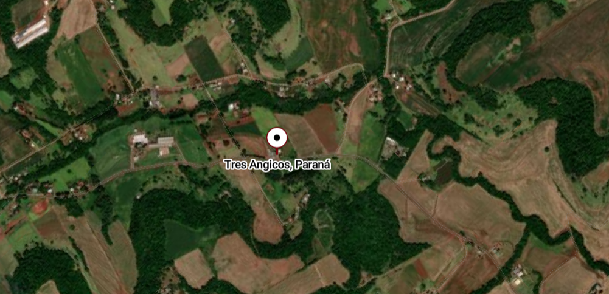

localização
Onde fica, imagens de sua localização e pontos de referência
Onde a linha três angico esta localizada
A linha Três Angicos-Capanema, PR-,
fica localizada próxima ao Machado's Club,
em direção a comunidade Santo Antônio
Dos Siemens, depois de passar
pelo bairro Santa Cruz.
pontos de reeferência

A comunidade Três Angicos,
por ser uma vila rural, tem
uma grande diversidade no relevo,
tem várias colinas e cerros.